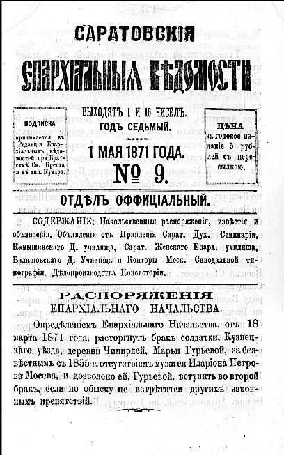

Глава II
Каменские: от диакона Павла к моему прадеду Евгению
Документально подтверждённая линия Каменских начинается с моего прапрапрапрадеда Павла Григорьевича Каменского. Он родился в 1785 году и в документах проходит как диакон. Точная дата смерти пока не найдена; осторожная архивная формулировка — не ранее 1840 года. Его служение связано с Пензенской и Саратовской епархиями: Каменка, Самодуровка, Дёмкино, Покровская церковь, Казанский молитвенный дом. Это была приходская Россия — сёла, храмы, училища, семьи священно- и церковнослужителей.
Сын Павла Григорьевича, Василий Павлович Каменский, продолжил эту линию уже как священник. Он родился в 1804 году и умер не позднее 1862 года. Служил в Саратовской губернии, в Хвалынском уезде: сначала в селе Ново-Спасском, затем в Стригае. Его жена, Мария Матвеевна, стала матерью Ивана Васильевича Каменского — моего прапрадеда.
Так появляется документальный ствол Каменских: Павел Григорьевич, Василий Павлович, Иван Васильевич, Евгений Иванович, Сергей Евгеньевич, Владимир Сергеевич — и дальше мы.
1 мая 1871 года священник села Порзова Иоанн, или Иван, Васильевич Каменский был утверждён благочинным 2-го округа Петровского уезда. Ему было всего двадцать восемь лет. Это назначение показывает его положение в епархии и делает Порзово одной из ключевых точек семейной истории.



Фрагмент епархиальных ведомостей с упоминанием священника села Порзова Иоанна Каменского.
Следующая важная фигура моей прямой линии — Иван Васильевич Каменский. Через него история приближается к человеку, с фотографии которого начался мой поиск, — к Евгению Ивановичу Каменскому.
Документ 1896 года показывает последние годы служения Ивана Васильевича в Порзово. В нём говорится о его прошении принять детей, учившихся в Петровском духовном училище, на содержание за счёт окружного духовенства из-за болезни отца. Прошение отклонили: в постановлении указано, что он, хотя и болен, прихода и доходов не лишён, а приход у него «очень хороший».
За сухим языком документа виден живой человек: болезнь, дети в училище, забота о семье и Порзовский приход, где он продолжал служить незадолго до смерти.

Упоминание Иоанна(Ивана) Каменского, священника села Порзова, 1896 год. Прошение о помощи в содержании детей, обучавшихся в Петровском духовном училище, по причине болезни отца.
Иван Васильевич родился в 1843 году и умер в сентябре 1898 года. Он окончил Саратовскую духовную семинарию, в декабре 1866 года был рукоположен во священника и служил в Порзово, при Казанской церкви. Там он был не только приходским священником, но и благочинным второго округа Петровского уезда.
Именно в Порзово, в семье Ивана Васильевича и Веры Дмитриевны Добролюбовой-Каменской, родился мой прадед Евгений Иванович Каменский.
Павел — диакон. Василий — священник. Иван — священник. Евгений — священник.
Четыре поколения подряд. Здесь служение уже не выглядит случайностью. Оно становится семейной осью.
Но эта история не держится только на мужской линии. Вокруг неё были жёны, дочери, браки, училища и другие духовные семьи. Через Веру Дмитриевну в Каменских вошли Добролюбовы. Через Анну Константиновну Фисейскую позднее вошли Фисейские. У Евгения Ивановича и Анны Константиновны родились Сергей, Владимир и Антонина. Через Сергея Евгеньевича идёт моя прямая линия, а судьба Владимира Евгеньевича помогает понять семейный страх XX века.
История рода никогда не идёт одной прямой линией.
Она похожа на реку, в которую впадают другие реки.
И каждая меняет её течение.